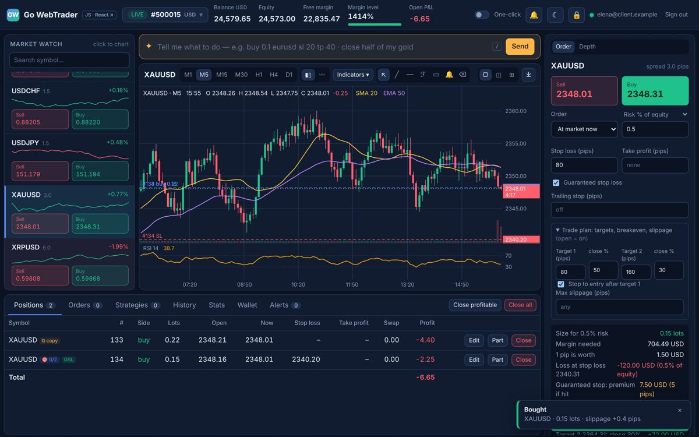
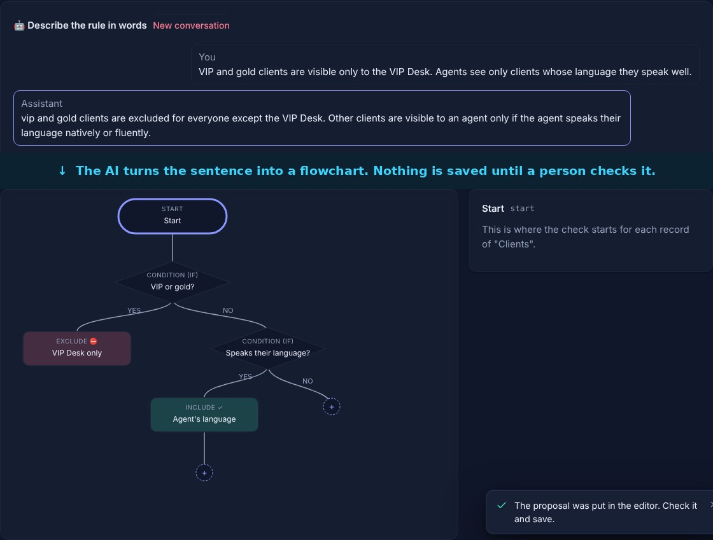
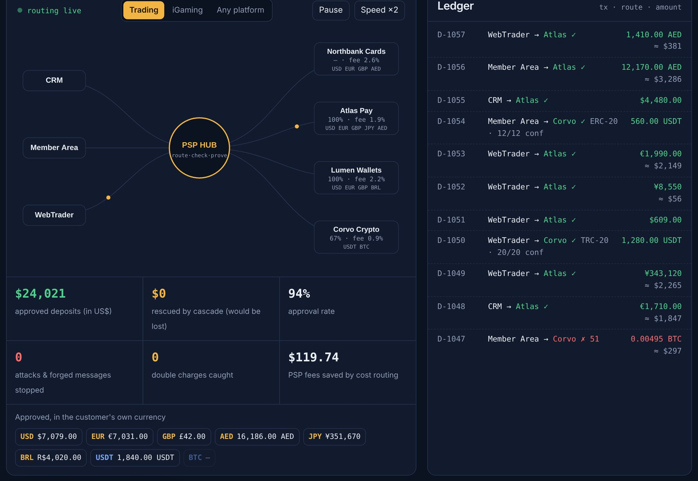
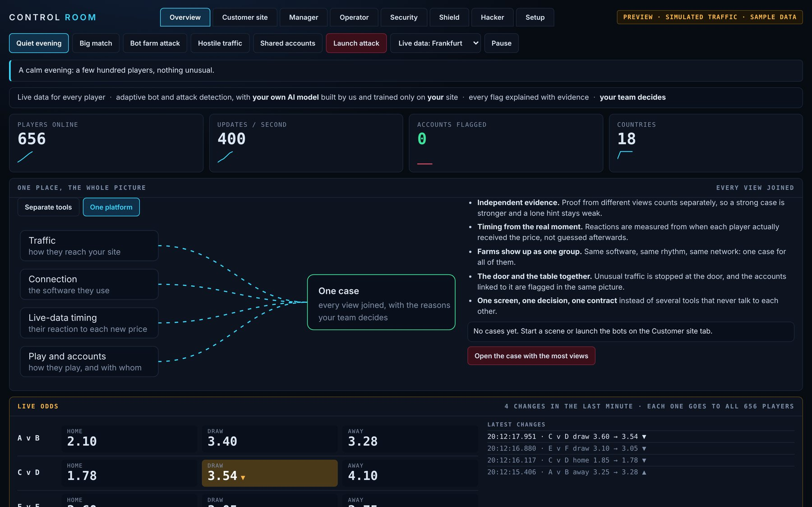
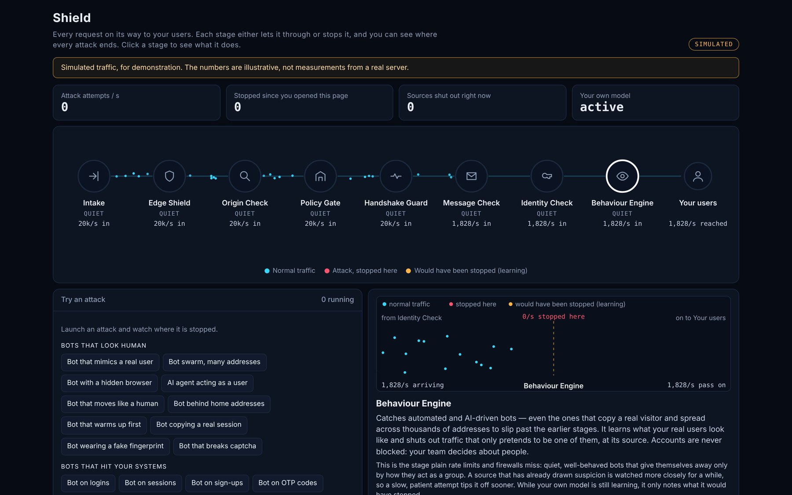
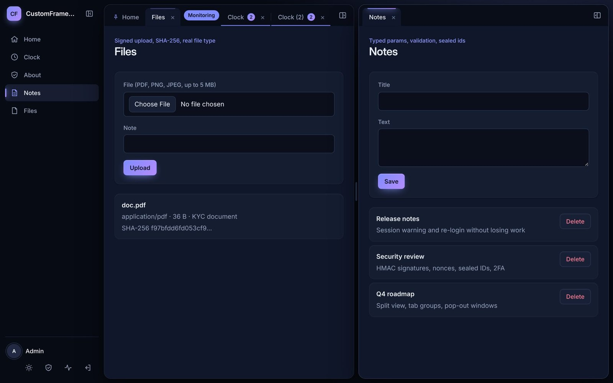
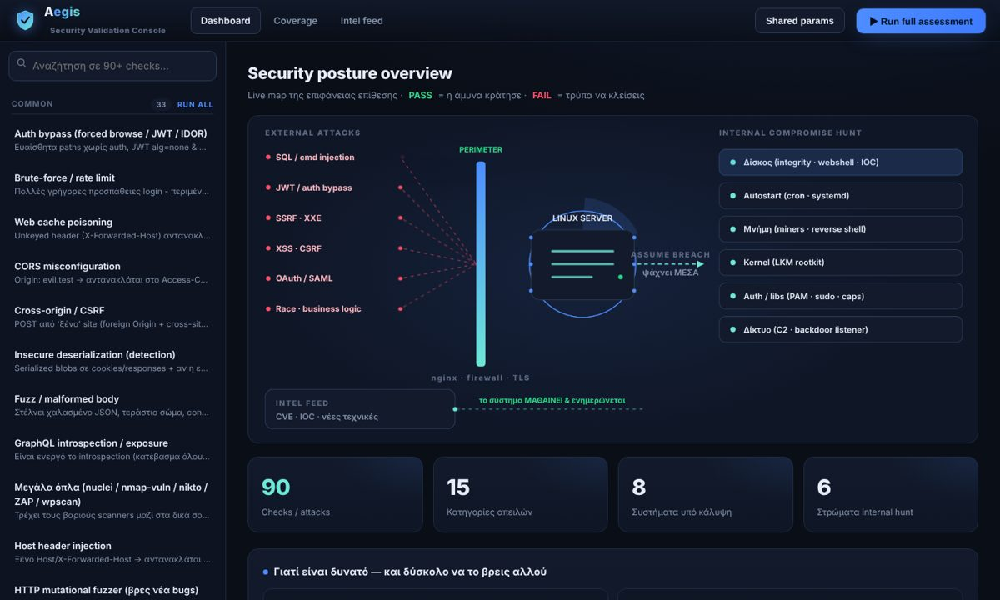

Seven independent systems, built in my own time on top of 20+ years of experience. Each one designed, built and tested by me, and now moving to production servers. The first versions of the trading platform, the UI framework, the CRM and the client portal were presented to IronFX; the others followed along the way. The source code is private; the products are developed for commercial use.

Since 2022 · first version presented to IronFX
Trading platform
A complete trading platform with its own engine instead of MetaTrader. The engine is written in C++ and handles an order in about 5 microseconds, measured with a million orders on a 2-core test server. Web and mobile apps, copy trading, PAMM and MAM, a dealing desk for the broker, and connectivity to liquidity providers.
C++GoJavaScriptReactFIXiOS & Android
Public showcase ↗

Since 2022 · first version presented to IronFX
AI-native broker CRM and client portal
The CRM you build by talking to it. Describe a module, an access rule, a report or a compliance check in plain words: the AI drafts it and measures the impact, a person approves it, and it never sees client data. One sentence like “Kostas moves to Funding: withdrawals of one brand only, approvals up to 1,000 USD, only from the office” becomes a ready role, assignment, approval limit and access window. Underneath, access control built for real brokers (companies, brands, departments, record sharing, break-glass, reveal with a reason, database-level row security), with KYC, AML and partner programs. Plus a white-label client portal, both with their own mobile apps.
GoPostgreSQLAI: self-hosted + ClaudeJavaScriptMy UI frameworkiOS & Android

Payment orchestration hub
One hub between every product and every payment provider: routing and fallbacks, reconciliation, fraud checks, alerts and a secure cashier. New providers are added as configuration, not code, straight from their official docs (Checkout.com, Nuvei, Praxis, Trustly and more), and tested against a built-in provider emulator before going live. Its back office runs on my own UI framework.
GoPostgreSQLMy UI framework

Real-time broadcast server
Streams live data to many thousands of users at once, for trading and iGaming, and flags bots and account farms with the evidence for the operator to decide. Client libraries in C++, Python, Go and JavaScript.
C++LinuxWebSocketTLS

Multi-layer security platform
A security base shared by every product, from the network card to the application. It learns each customer's normal traffic, catches AI bots, scrapers and fake crawlers, and explains every alert in plain words. Threats mapped to MITRE ATT&CK.
C++GoLinux kernelMachine learning

Since 2022 · first version presented to IronFX
UI framework
A framework for web applications that stay open all day: tabs like a desktop app, memory that cleans itself, every request signed and checked, and permission rules that can depend on the network and the time of day. It powers the CRM, the client portal and the payment hub's back office.
GoJavaScript
Public showcase ↗

Pen-test and hardening toolkit
My own toolkit with 180+ attacks and checks that tests every one of these systems and their Linux servers before they go live, locally and offline.
PythonLinuxSecurity